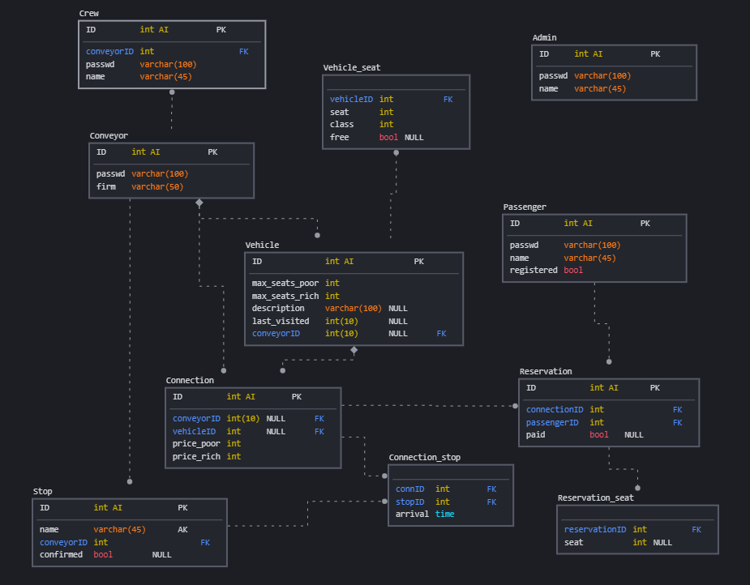

3. Hromadná doprava: zadávání, vyhledávání spojů a rezervaci jízdenek
- Autoři
- David Fridrich
xfridr08@stud.fit.vutbr.cz -
forhend
- Luděk Burda
xburda13@stud.fit.vutbr.cz -
backend
- nobody :( -
na projektu jsme pracovali pouze my dva, třetí kolegyně s námi přestala komunikovat s blížícím se deadlinem bez odvedení práce
- URL aplikace
- 85.208.51.209:8000
Uživatelé systému pro testování
| Login | Heslo | Role |
|---|
| kuli | yoboi | admin |
| SimoniJezdi S.R.O | awdawd | dopravce |
| Petr Straka | hezlo321 | personál |
| zebrak1 | boringPW1 | cestující |
Implementace
Backend je v javascriptu, využit framework express, komunikace s frontendem probíhá přes API. Frontend je psán v javascriptu, využit framework React.
Databáze

Instalace
- potřeba program npm, specifické moduly definovány v package.json
- $ npm run build
- databázi lze inicializovat a naplnit testovacími daty pomocí skriptu db.sql
Známé problémy
Vypíčenej frontend. Vůbec není interface pro dopravce ani personál piče.